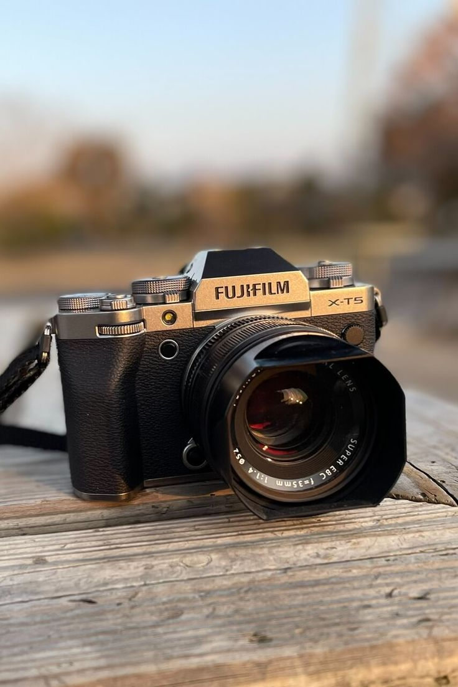
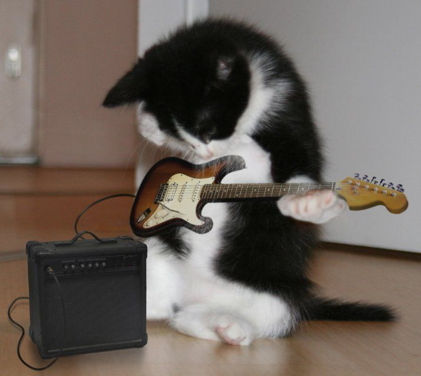
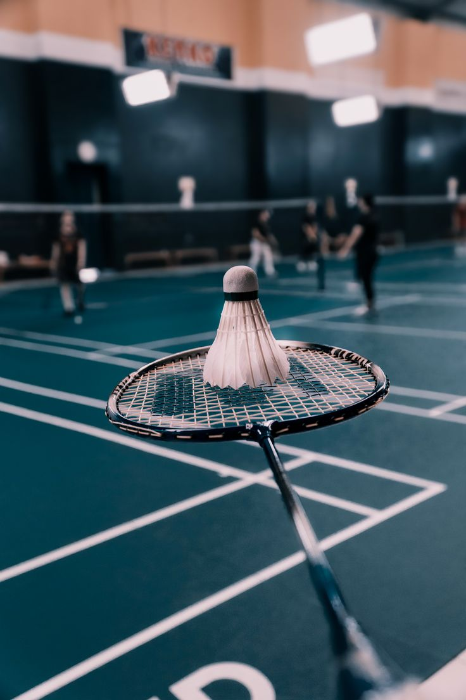

Fotografi
Sejak duduk di bangku SMA saya memiliki minat pada bidang fotografi karena saya sangat suka menyimpan suatu momen yang mungkin tidak dapat diulang lagi,
namun karena kurangnya fasilitas pada saat itu saya hanya dapat mengembangkan sedikit kemampuan saya. Pada saat saya masuk perguruan tinggi saya

Musik
Mendengarkan dan bermain musik adalah cara saya untuk mengekspresikan diri dan bersantai.
Saya mulai bermain musik dari saat saya masuk SMA. Alat musik yang dapat saya mainkan hanya gitar dan saya tidak terlalu mahir memainkannya,
akan tetapi memainkan alat musik membuat saya merasa lebih produktif dan santai sebelum melakukan tugas berat

Olahraga
Saya rutin berolahraga untuk menjaga kesehatan dan kebugaran tubuh. Saya menyukai olahraga yang dimainkan lebih dari satu orang
seperti badminton, basket, tennis meja, dan lain-lain. Saya juga menyukai olahraga yang dilakukan sendiri untuk melatih dan menyehatkan tubuh
seperti push-up, sit-up, atau workout di rumah ataupun tempat kebugaran seperti Gym